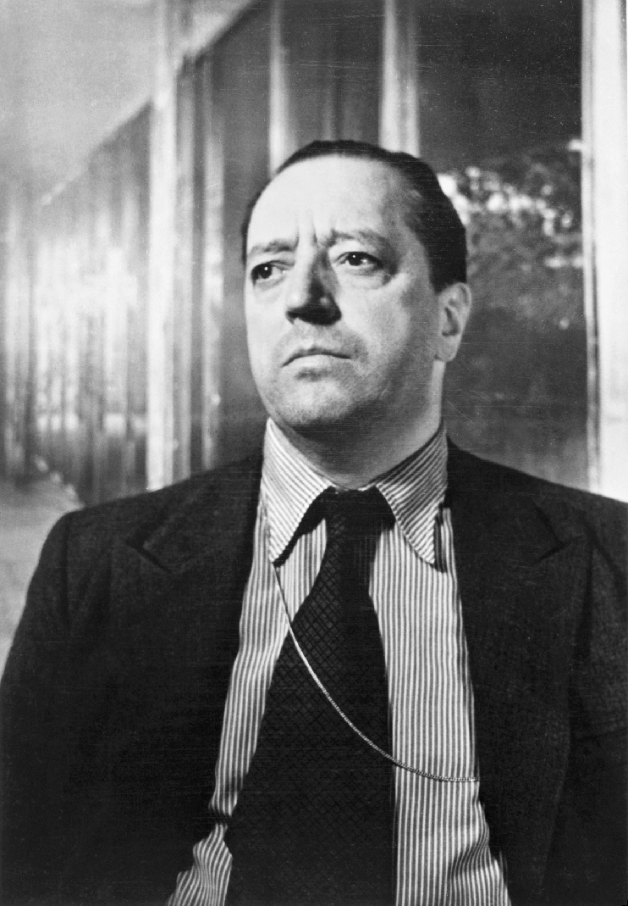

Frank Lloyd Wright
Known for: Organic Architecture, Fallingwater
Zaha Hadid
Known for: Futuristic Designs, Heydar Aliyev Center
Le Corbusier
Known for: Modernism, Villa Savoye

Ludwig Mies van der Rohe
Known for: Minimalism, Barcelona Pavilion
Norman Foster
Known for: High-Tech Architecture, The Gherkin
Tadao Ando
Known for: Concrete Simplicity, Church of the Light
Rem Koolhaas
Known for: Deconstructivism, CCTV Headquarters
Bjarke Ingels
Known for: Sustainable Innovation, VIA 57 West
Renzo Piano
Known for: The Shard, Centre Pompidou
I.M. Pei
Known for: Glass Pyramid at the Louvre